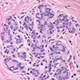
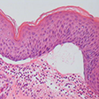
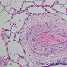
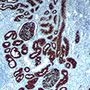

MPL is a physician-owned, full service anatomic pathology lab dedicated to providing patient-centered care. Directed by Dr. Motaz Albahra, MD since 2004, MPL specializes in comprehensive pathology services. Dr. Albahra is proud to serve the medical community with over 30 years of experience, welcoming the opportunity for consultation on each individual case.
Why Choose Us
MPL combines cutting-edge diagnostics to provide comprehensive service with a 24-48 hour turnaround. We are flexible in response to our local medical community’s needs.
Thorough Diagnosis
Our Pathologist is board certified in anatomic pathology by the American Board of Pathology. If faced with a particularly rare or difficult diagnostic dilemma, we readily seek outside consultation for a second opinion.
Local, Personalized Service
Physicians are encouraged to call or visit our lab to discuss any case directly with our pathologist. If your practice prefers a daily courier pickup and hand-delivered reports, we can accommodate you.
Services
MPL provides comprehensive anatomic and clinical pathology services to hospitals, endoscopy and surgery centers, clinics and health care providers throughout East Texas. We are proud to offer the following services:
Hours of Operation: Monday to Friday - 7 am to 5 pm
Surgical Pathology
MPL provides full histopathologic services. We specialize in the evaluation and diagnosis of breast, dermatopathology, gastrointestinal, liver, gynecological, urological, pulmonary, and lymph node specimens.

Breast
We provide comprehensive evaluation of core biopsies, lumpectomies, and mastectomies. Tumor markers analysis by immunohistochemistry, FISH of the HER2 gene, and PCR techniques are provided.

Dermatopathology
Services include the evaluation of skin biopsies, interpretation of dermatoses and neoplasms, conventional and immunohistochemical staining, immuno-flourescent studies, and tumor markers.
Gastrointestinal & Liver
Dr. Albahra specializes in the interpretation of liver pathology, requiring an in-depth knowledge of clinical pathology and the recognition of the multi-disciplinary nature of hepatology and gastroenterology.
Gynecological
Our utilization of thin layered technology for cytology, with its same sample ancillary testing for HPV, chlamydia and gonorrhea, attracts a host of active and progressive gynecologists.
Urological
Numerous prostate cases are seen daily at MPL. Results are summarized on our customized prostate patient report that includes a graphic template designed for better diagnostic reference.

Pulmonary
MPL reviews a vast array of biopsies and fine needle aspirations. For idiopathic lung disease, MPL consults with Dr. Tom Colby, the preeminent leader in the field, practicing at the Mayo Clinic in Scottsdale, Arizona.
Lymph Node
We offer comprehensive histopathologic and cytopathologic evaluation of lymphoid tissues, using conventional and immunohistochemical stains.
Cytopathology
Services include cytologic interpretation and consultation of gynecological and non-gynecological specimens, as well as performing fine needle aspiration procedure with evaluation and interpretation.
GYN cytology evaluations include Pap smears (ThinPrep), HPV screening and GC/chlamydia testing. Non-GYN cytology evaluations include, but are not limited to, breast, fine needle aspiration, thyroid, pulmonary, solid tumors, evaluation of fluids, and cerebral spinal fluid cytology.
Immunohistochemistry

MPL offers tumor marker analysis by immunohistochemistry, in-situ hybridization (FISH), and PCR techniques (polymerase chain reaction). We have a large panel of antibodies for IHC testing, including breast receptors. We utilize reference labs for any antibody not in our library.
Privacy Policy
This notice explains how medical information about you may be used and disclosed by Medical & Pathology Lab and how you may access this information.
We Respect Your Privacy
This “Notice of Privacy Practices” (Notice) explains how we protect and use your personal health and medical information, and what your rights are related to your health information under the Health Insurance Portability and Accountability Act (HIPAA) of 1996. Members of the Medical & Pathology Lab (MPL) workforce follow the privacy practices described in this notice.
Requirements Regarding This Notice
MPL is required by law to provide you with this Notice. We will follow the practices outlined here as long as they are in effect. We may make changes to this Notice. These changes will be effective for current medical information we have about you, as well as any information that we may receive in the future. Every time that you have a procedure at MPL, you may receive a copy of the Notice in effect at that time. You will be asked to sign a statement acknowledging receipt of this Notice. MPL keeps your medical information in records that are handled confidentially as the law requires; however, there are times when we must use and share your medical information with others in order to provide you with quality health care. For example, we will share your medical information when we refer you to a specialist or file your insurance claim for you.
We may use and disclose your health information for treatment, payment, or healthcare operations to provide you with quality health care.
Health information may identify you and may relate to your past, present, or future health condition related to the healthcare services received at our facility, or information that may be forwarded to us from other providers (doctors, hospitals, etc.). Federal law permits us to use your health information for the following purposes without your prior authorization:
Treatment - Physicians and other members of the healthcare team may share your health information.
For example, we may send medical information about you to another physician when you are referred to that physician for treatment or evaluation.
Payment - Your health information may be used to obtain payment for your health care bills.
For example, billing information may be sent to your insurance company.
Healthcare Operations - Your health information may be used to improve the quality of care to support healthcare operations and reduce health care costs.
For example, we provide results to outside health institutions for further studies.
Unless asked for restrictions on a specific use or disclosure, health information may be used for the following purposes without your authorization:
Appointment reminder: We may contact you as a reminder that you have an appointment at our facility for treatment or medical care.
Individuals Involved In Medical Care and Disaster Relief: We may disclose your health information to a family member or close personal friend who is involved in your medical care if the information released is directly relevant to the person’s involvement with your care. We may give information to someone who helps pay for your care.
Research: We may give your health information to researchers for research purposes.
Business Associates: We limit the sharing of information with others; however, we may disclose your health information to business associates to carry out health care treatment, payment and operations functions, such as to install a new computer system.
Public Health and Other Purposes: Subject to certain requirements, we may give out health information about you for public health purposes, such as infectious disease control, notifying government authorities of suspected abuse, neglect or domestic violence, reporting purposes, audits, inspections, research studies, required notifications of death, Workers’ Compensation, the Food and Drug Administration, health oversight, judicial and administrative proceedings, law enforcement, specialized government functions, state surveyors, licensing, accrediting, quality oversight agencies, and emergencies.
These examples of potential disclosures of health information are not intended to cover all the ways MPL may use your protected health information. Additional disclosures may be appropriate without requiring your prior authorization.
Special Situations
As Required By Law - We will disclose your health information when required to do so by federal, state, or local law.
Special Protections for Alcohol and Drug Abuse Information – MPL will not disclose or provide any protected health information relating to the patient’s substance abuse treatment unless: 1) the patient consents in writing; 2) a court order requires disclosure of the information; 3) qualified personnel use the information for treatment, payment or health care operations; or 4) it is necessary to report a crime or a threat to commit a crime, or to report abuse or neglect as required by law.
Uses and Disclosures of Protected Health Information Based on Your Written Authorization
Except as described above, we will not use or disclose your medical information unless you allow MPL to do so in writing. You may revoke or withdraw your permission effective only after the date of your written withdrawal. You may obtain an authorization form from the Privacy Officer.
Your Rights Regarding Your Health Information.
You may make written requests on the forms provided by MPL to exercise your rights as stated below:
Right to Request Restrictions – You have a right to request limitations on your health information used or disclosed about you for treatment, payment, and health care operations; however, we are not required to comply with your request. For example, you may ask us not to disclose that you had a particular procedure. We will release the information if necessary for emergency treatment.
Right to Inspect and Copy - You have a right to review and request a copy of your medical or health record, with certain exceptions. For example, psychotherapy notes may not be inspected. Under limited circumstances your request may be denied. If denied, you may request a review by another licensed health care professional chosen by MPL. We will comply with the outcome of the review. We may charge a fee for the costs of copying, mailing, or other fees associated with your request.
Right to Request Amendment - If you believe that health information in your record is incorrect or incomplete, you may request an amendment on the form that is provided by MPL. We may deny your request under certain circumstances and you have a right to appeal that denial.
Right to Accounting of Disclosures – You may request a list of the disclosures of your medical information that have been made by MPL in the six (6) years prior to the date of your request, but not prior to April 14, 2003. However, there are exceptions to this right. For example, disclosures to carry out treatment, payment and health care operations as well as disclosures for national security, intelligence purposes, correctional institutions, law enforcement officials and those in which you have authorized are not included in this listing. You may be charged a reasonable fee for this information.
Right to Confidential Communications – You may request that we send communications of protected health information by alternative means or to an alternative location.
Right to a Copy of This Notice – You may request a paper copy of this Notice at anytime. You may also obtain an electronic copy of this Notice at our website, www.mplpath.com.
How to File a Complaint
If you believe your privacy rights have been violated, you may file a complaint with MPL’s Privacy Official or with the Secretary of the Department of Health and Human Services, Office of Civil Rights. There will be no penalty or retaliation against any individual for filing a complaint. You can file a complaint with the Privacy Office at 410 N. 4th St, Longview, TX 75601, Phone (903) 758-8500.